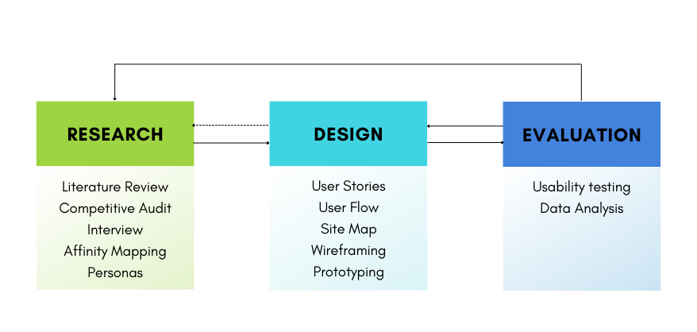
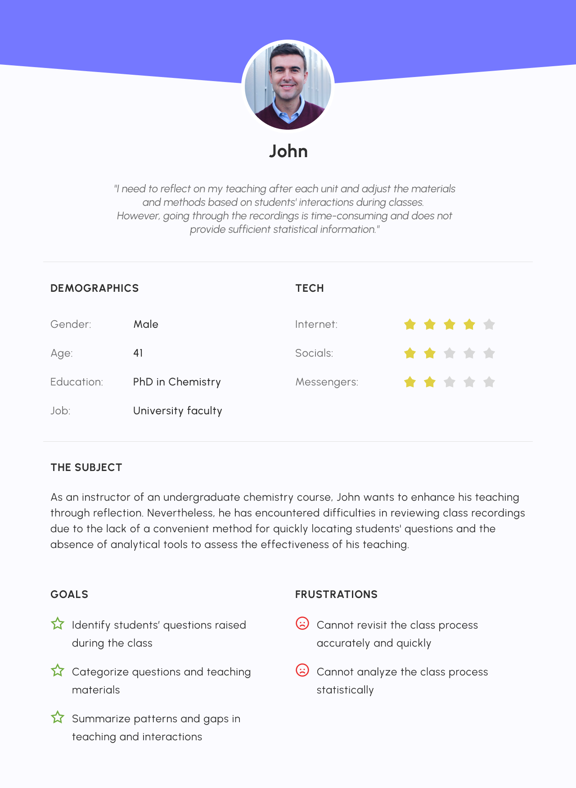
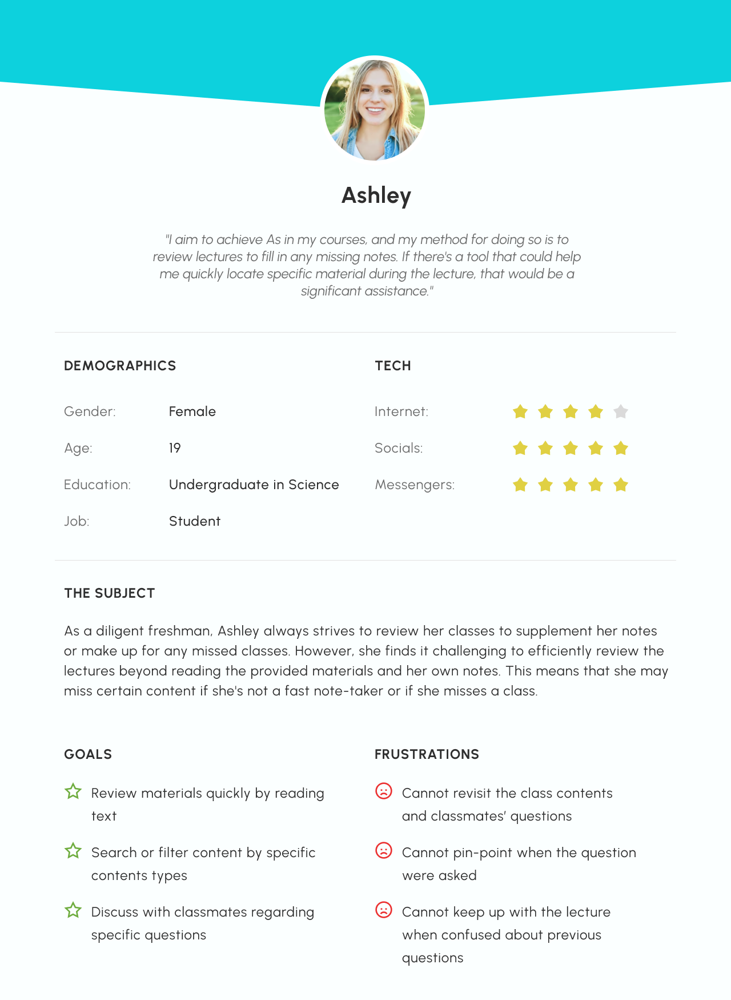
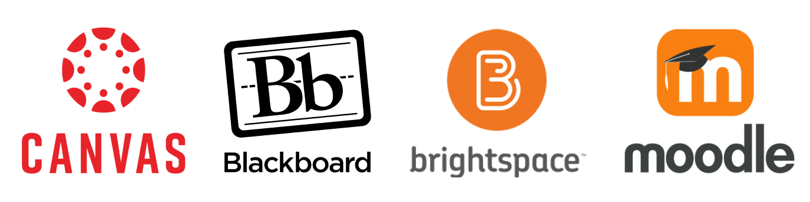
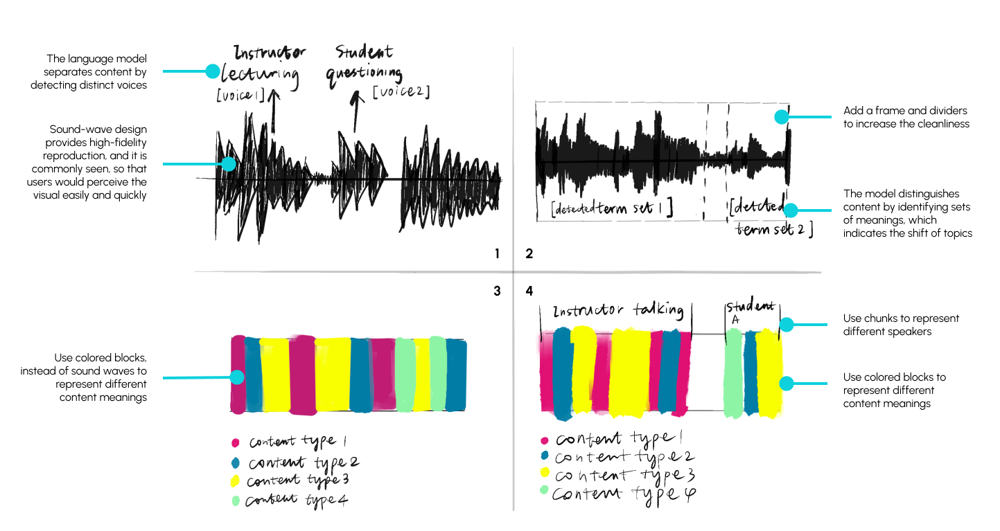
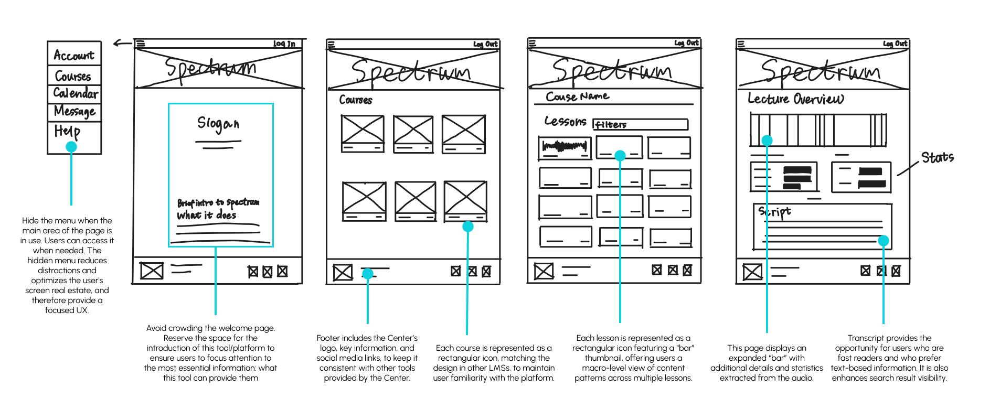
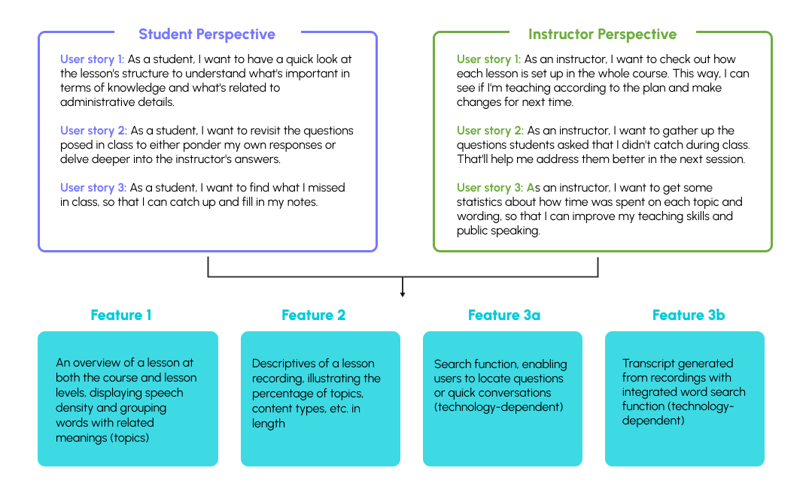
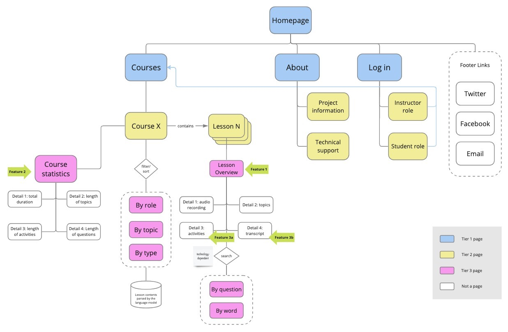
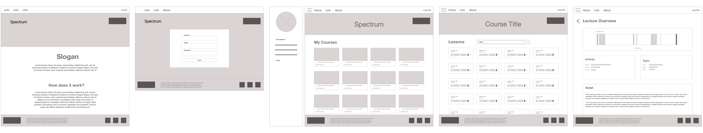

UXD Project - Spectrum
OVERVIEW
Spectrum is an online platform that explores the use of cutting edge Natural Language Understanding models on transcripts of lecture recordings. It aims to help instructors, course designers, and students in reflective teaching and learning practices by providing data-driven analyses.
Problem
Instructors have very few channels for actionable feedback, and students have limited access to the lecture details after class.Goal
To serve users with a diverse reflective tool by offering the distribution of concepts and topics discussed over the course from a macro-level view.- To facilitate instructors to reflectively teach by providing stats for them to analyze
- To support students to reflectively learn by providing visually organized contents for them to review and synthesize
Solution
Spectrum facilitates the reflection of instructors and students on their teaching practices and learning materials by offering statistics and a searching function across lectures.My role
Researcher and designer focused on student experiences(3 researchers/designers, 2 developers, 1 product manager)
Timeline
October 2019 - March 2020Approach
We used the fundamental iterative process of UX Design throughout the development lifecycle to ensure a positive user-centered experience.

My Contribution
During the research phase, I conducted a literature review on needs of students' reflective learning and the methods/strategies used to facilitate the reflective learning process. I also researched the design trends of learning management systems and audo visualization to inform the ideation during the design phase. Additionally, I conducted two of the four semi-structured interviews with students, which helped us understand the student-specific requirements for the platform to be built.During the design phase,my concepts for audio visualization were refined and evolved into the final prototype. I crafted the user stories and contributed to the information architecture design. The team collaboratively designed and redesigned the mockups.
During the evaluation, I monitored the usability testing and led the analysis focusing on the student perspective.
Research
To understand the problem and users deeper
The project was sparked by the discovery of a technological tool, followed by its alignment with the ideal user needs, reflection. In the university context, instructors and students naturally emerged as the target users.
With these users in mind, the first-round research zeroed in on comprehending their reflective needs and devising ways to facilitate seamless reflection processes through an online platform.
- To understand the overall user needs and pain points, we conducted in-depth interviews with instructors and students.
- To understand users' habits of using LMSes and eLearning overall, we conducted domain research, e.g., literature review, competitive audits.
- Reflection is important and critical in both everyday and professional situations, becasue it serves as a facilitator for conducting in-depth emotional analyses (Schon, 1987).
- Other benefits of reflection include the enrichment of knowledge and capabilities, the identification of areas for improvement, and the development of strategies to address shortcomings (Coloer et al., 2013).
- Students' learning habits for eLearning encompass a preference for flexible content, a focus on a learner-centered approach, and a pursuit of higher quality and novel modes of interaction (Adina-Petruuta Pavel et al., 2015).



To the best of our knowledge, there currently exists no dedicated learning platform with a primary focus on facilitating reflective teaching and learning.
To get more inspirations, we conducted a Competitive Audit with an emphasis on Learning Management Systems (LMSs), especially those that are prevalent in university settings. As of 2023, the top 4 LMSs in the US based on market share are Canvas, Blackboard, Moodle, and Brightspace (formerly known as D2L) (research.com, 2023).

From studying these 4 LMSs, we learned that:
The main takeaways from the competitive audit include:- They all have left-hand side navigation bar which include "Courses" "Calendar" "personal dashboard" and "profile".
- Each course is visually displayed as a rectangular icon featuring a photo or colored block, with essential information presented below.
- Courses are in the main area of the homepage.
- The initial welcome page of the LMSs had slightly different UI designs, but they all conveyed a common message about branding and advertising the system's capabilities.
Design
To provide a practical solution
Ideation
Here comes our first key problem to tackle:- how to visually present audio to facilitate users to access key information quickly
- how to make the information architecture of the platform familiar to users
The "Bar"
The most core element of the platform is the lecture recordings. All the key information derives from a recording. It appears in every lecture of every course.That said, a clear and smart presentation of audio in visual could convey key information faster and better.
Here are 4 conceptual ideas that emphasized different aspects of the audio.

After thorough discussions, the team reached a consensus to adopt the 4th conceptual idea due to its streamlined appearance, which still effectively encapsulates essential information.It was during the ideation process for visualizing audio recordings that we decided to name the tool 'Spectrum'. Since the word 'Spectrum' not only means the representation of sounds' frequency components, at the same time, it also means the range of wavelengths of lights. It serves as a fitting punchline that harmoniously aligned with our concept of visualizing audio recording.
The Layout
Here shows the final conceptual idea that we pursuit with that mimic the overall looking of the learning management system the University uses combining the features that other popular LMSs are using.

The information Architecture
How could we create a platform that is not just good-looking, but effectively fulfills users' needs?With this leading question in mind, I created several user stories for each persona. The user stories guilded us to identify the minimum viable projects (MVPs).

Then, the key features identified based on the user needs were labeled on the site map to ensure they end up in the final product.

Wireframes
We developed the following wireframes to concretize our ideas and ensure that the information architecture makes sense.

Prototype
The following prototype is 1.0 version with the main user flow explained.